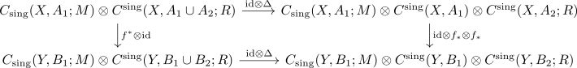

naturality of the cap product for a half empty excisive triad
Proposition
Let $f: (X,A_1,A_2) \rightarrow (Y,B_1,B_2)$ be a map of excisive triads. Suppose $A_1 = B_1 \emptyset$ or $A_1 = B_1 = \emptyset$. Then
\begin{align*}
f_{*} \circ \cap \circ (f^{*} \otimes \mathrm{id}) = \cap \circ f_{*}:
\end{align*}
commutes strictly
Proof
follows from the arguments in
where one may drop the "up to chain homotopy" as

commutes strictly by pseudo diagonal to the tensor product as natural map for a half empty triad